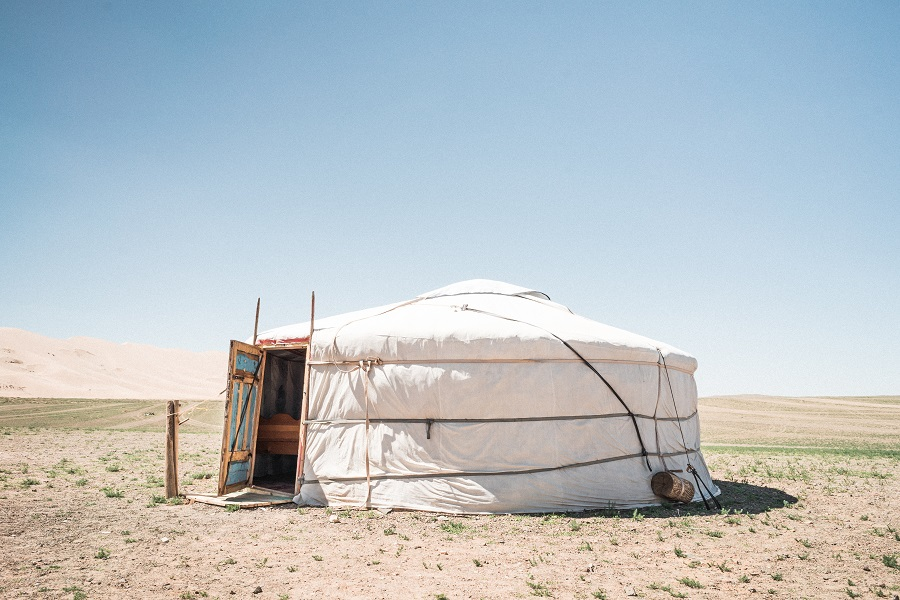

Cichy, spokojny zakƒÖtek na wsi gdzie ≈õpiewajƒÖ ptaki i nie ma zasięgu. Wygodne ≈Ç√≥≈ºko, w kt√≥rym pod koniec dnia mo≈ºna się zaszyƒá i w ciep≈Çym ≈õwietle lampki kontemplowaƒá lekturę. ToczƒÖcy się pociƒÖg, w kt√≥rym czas zwykle p≈Çynie wolniej i ksiƒÖ≈ºki bywajƒÖ najlepszym remedium. Zawsze jest dobry czas na czytanie ksiƒÖ≈ºek. Zw≈Çaszcza takich, kt√≥re przenoszƒÖ nas w dalekie krainy i sprawiajƒÖ, ≈ºe dzie≈Ñ pe≈Çen wyzwa≈Ñ w korpo ko≈Ñczy siƒô… na drugim ko≈Ñcu ≈õwiata üôÇ
„Gdzie ko≈Ñczy się droga. Samotna wyprawa po bezdro≈ºach Azji” – Erika Warmbrunn
M√≥j numer jeden tego lata! Autorka, 28-letnia Amerykanka, niedosz≈Ça aktorka, wyruszy≈Ça w samotnƒÖ, 8-miesięcznƒÖ podr√≥≈º na rowerze¬†po bezkresnych stepach Mongolii, nieprzystępnych Chinach i kolorowym Wietnamie.¬†W krajobrazach tej niezwyk≈Çej podr√≥≈ºy najciekawszƒÖ czƒô≈õciƒÖ jest wędr√≥wka przez Mongolię. Go≈õcinni ludzie, sielskie stepy ciƒÖgnƒÖce się a≈º po horyzont i… rezolutne dzieciaki ze szko≈Çy w ma≈Çej mongolskiej wiosce, gdzie Erika przez kilka tygodni naucza angielskiego.
Potem zimne Chiny ze swoimi zmieniajƒÖcymi się krajobrazami, nieraz przistaczajƒÖcymi się w przera≈ºajƒÖce miejsca, jak na przyk≈Çad klaustrofobiczna g√≥rnicza wioska wci≈õnięta w g√≥rskƒÖ dolinę. Wszechobecny duszƒÖcy py≈Ç, kt√≥ry przys≈Çania≈Ç widoczno≈õƒá i mocno ogranicza≈Ç dop≈Çyw ≈õwiat≈Ça s≈Çonecznego, dzieci jedzƒÖce brudne jab≈Çka pokryte kurzem i ich astmatyczne matki pogodzone ze swoim smutnym losem… Podr√≥≈º autorki to nie zawsze u≈õmiechy i rado≈õƒá ale te≈º g≈ǃôbokie przemy≈õlenia, dyktowane zastanymi okoliczno≈õciami.
Po drodze Erika przeżywa wiele fascynujących przygód, a każdy dzień wydaje się być ciekawszy od poprzedniego. Autorka jest niezwykle pozytywną osobą, której trudy podróży nie powstrzymują przed podążaniem wyznaczoną ścieżką. Jej ciekawość świata jest zaraźliwa a ciekawe refleksje z podróży nierzadko skłaniają do zadumy. Erika często zdobywaj się na autoironię i śmieje się z własnego braku znajomości obyczajów i języka właśnie odwiedzanego kraju. Dziewczyna zaraża entuzjazmem do podróży a jej zachwyt otaczającym światem udziela się czytającemu. Gorąco polecam tę lekturę!
„Miasto Cud√≥w” – Eduardo Mendoza
Lekka, przyjemna lektura z historiƒÖ Barcelony w tle. „Miasto cud√≥w” to hiszpa≈Ñska wersja perypetii naszego rodzimego Nikodema Dyzmy . Autor ironicznie ale i z sympatiƒÖ przedstawia spo≈Çecze≈Ñstwo Barcelony z prze≈Çomu XIX/XX wieku. G≈Ç√≥wny bohater, Onufry Bouvila, jest sprytnym katalo≈Ñskim dorobkiewiczem, kt√≥ry z up≈Çywem czasu dorabia się ogromnego majƒÖtku, stajƒÖc się jednym z najbardziej wp≈Çywowych ludzi w Hiszpanii. Po drodze prze≈ºywa wiele przyg√≥d, zakochujƒÖc się na zab√≥j, prowadzƒÖc szemrane interesy i knujƒÖc intrygi wszelakie, niejednokrotnie prowadzƒÖce do morderstw i nieszczƒô≈õƒá. Autor z polotem opisuje przygody Onufrego, nie szczędzƒÖc groteski i czarnego humoru. Lektura obowiƒÖzkowa dla fan√≥w Barcelony!


{kind=link}
{kind=link}
{kind=link}
{kind=link}
{kind=link}